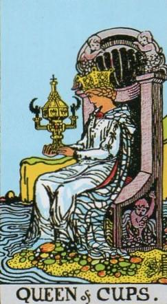
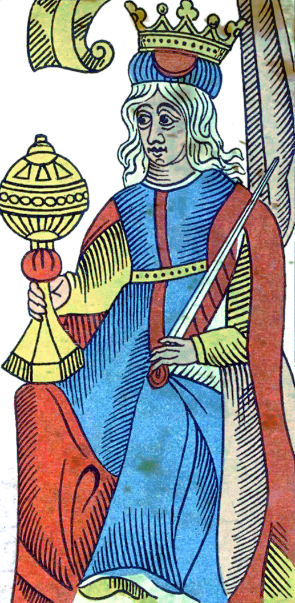
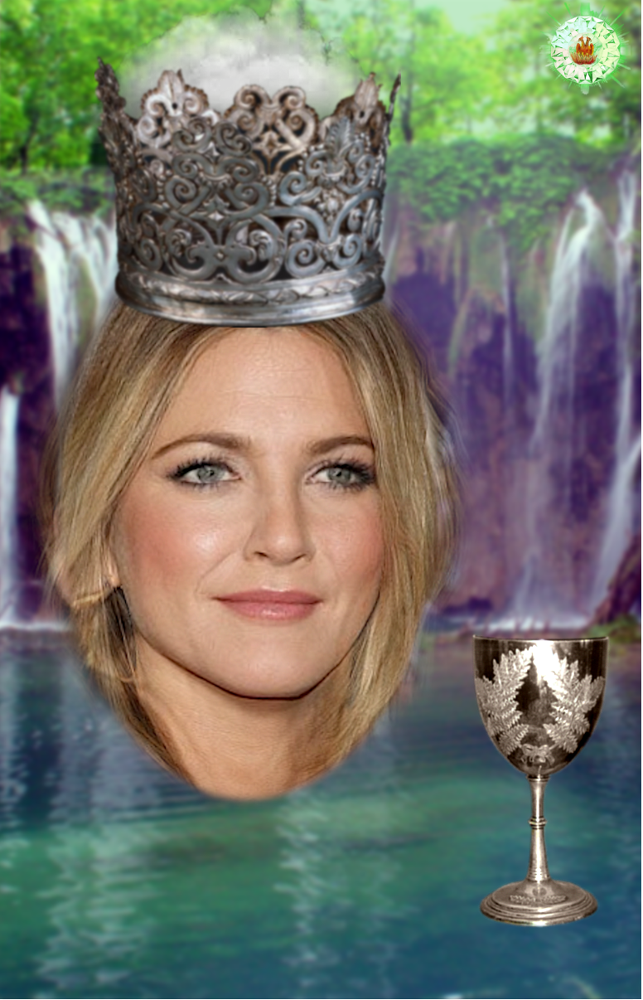
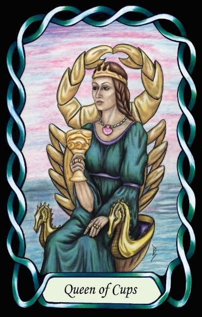

Queen of Cups
The Champion (ENFP – NeFi)




Queen |
Idealist: Abstract Collaborative |
|||
Emotions |
||||
Extroverted iNtuition Introverted Feeling, |
||||
8.1% of population |
||||
Examples: Drew Barrymore, Jennifer Aniston |
||||
Meaning of Life: Finding Purpose |
||||
Astrology: Pisces (Female side) |
||||
Queens of Cups are emotionally expressive Idealists who feel a deep responsibility toward the wellbeing of others. Their sense of right and wrong is grounded in introverted feeling (Fi), giving them strong personal ethics and a desire to protect the vulnerable. Unlike the Queen_of_Pentacles, who focuses on individuals, Queens of Cups think in terms of society as a whole — how people should treat one another, and what a compassionate world ought to look like.
Their extroverted intuition (Ne) makes them forward-looking, optimistic, and enthusiastic. They see possibilities for improvement everywhere, and they naturally inspire others to believe that change is possible. As Idealists in a Water suit, they are driven by emotional vision — a felt sense of how humanity could evolve toward greater empathy, fairness, and connection.
They are the champions of social justice and reform, not through confrontation, but through inspiration, storytelling, and emotional leadership. Their influence comes from their ability to articulate a better future and to awaken the moral imagination of others. They lead by encouraging, uplifting, and helping people see the best in themselves.